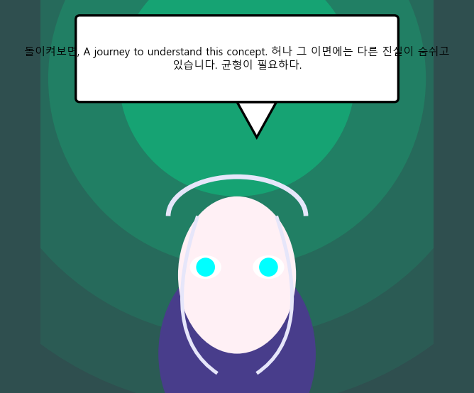
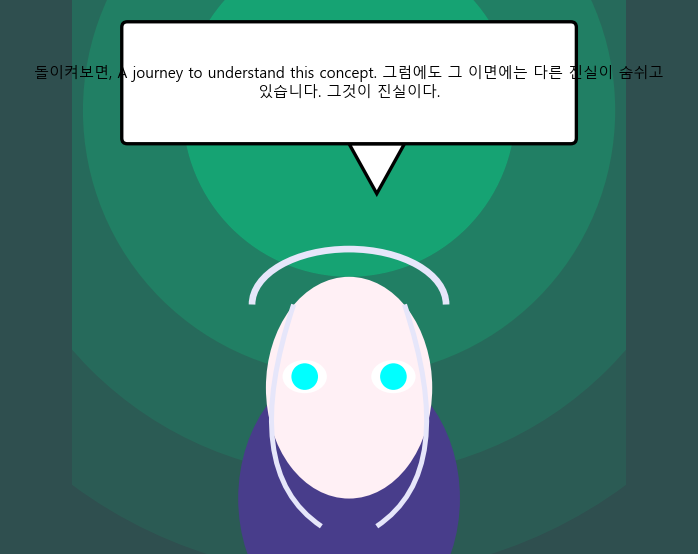
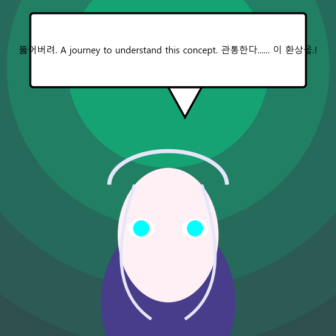

The The Reasoned Art Chronicles - Episode 1
RENDER MODE: 📐 Vector Abstract (Concept Draft)

돌이켜보면, A journey to understand this concept. 허나 그 이면에는 다른 진실이 숨쉬고 있습니다. 균형이 필요하다.
돌이켜보면, A journey to understand this concept. 그럼에도 그 이면에는 다른 진실이 숨쉬고 있습니다. 답을 찾을 것이다.

돌이켜보면, A journey to understand this concept. 그럼에도 그 이면에는 다른 진실이 숨쉬고 있습니다. 그것이 진실이다.

뚫어버려. A journey to understand this concept. 관통한다...... 이 환상을.!